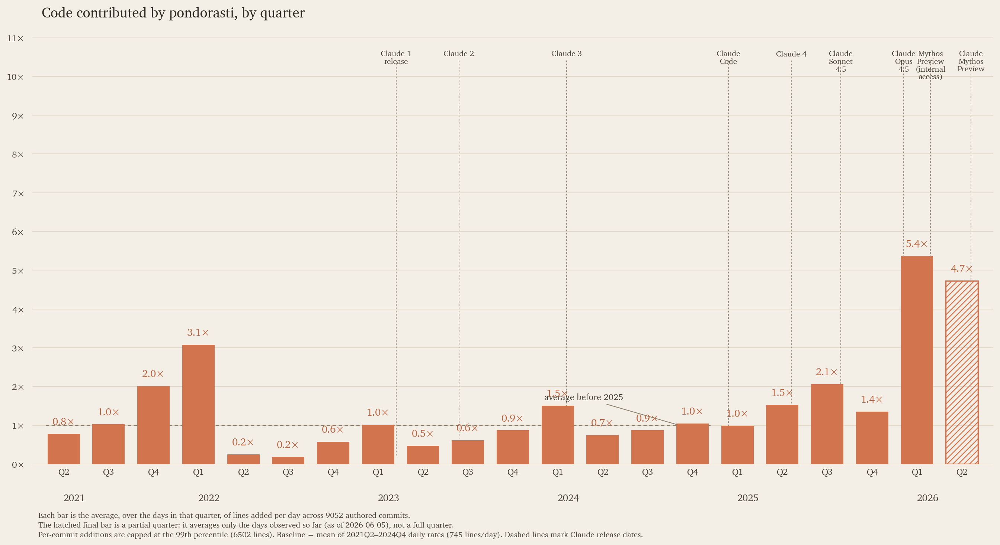

Code contributed by pondorasti, by quarter
A personal recreation of Anthropic's internal “Code contributed per person” chart, computed from every authored commit across 202 public, private, and forked repos.
Across 10,659 authored commits spanning Q2 2021–present, peak quarterly output landed at 5.4× the pre-2025 baseline in Q1 2026 — Claude Code era. The previous quarter shape (PR-only) suggested 8× because the baseline was undercounted; once private-repo commits join the denominator, the real boost is more like 3–5×.

Headline numbers
10,659
commits authored (all-time)
202
repos analysed (incl. private)
745
lines/day baseline (2021–2024)
5.4×
peak multiplier (Q1 2026)
Methodology
- Enumerated every repo the user has authored commits in: owned, contributed-to, public, private, archived, forks.
- Bare-cloned 202 repos to a local cache and ran
git log --no-merges --numstatfiltered to the user's known author identities (pondorasti@gmail.com,alexandru_turcanu@ymail.com, the local-machine and GitHub no-reply forms). - Deduped by commit SHA across forks; cap per-commit additions at the 99th percentile (Anthropic's chart caps per-PR).
- Quarterly bar = sum(capped additions) / days in quarter; the final partial bar uses only days observed so far.
- Multiplier = quarter's daily rate / (mean of 15 pre-2025 quarterly daily rates).
Caveats worth knowing
- Multipliers for one person are noisier than an org average — one big project launch or sabbatical shifts a quarter materially.
- 21 repo names collide across owner namespaces (e.g.
pondorasti/X+upstream/X). For all but two cases, the fork was cloned; this captures the author's original work but may miss commits made directly to upstream via the GitHub web UI. - "Lines added" rewards code-generation-heavy commits (lock-file syncs, scaffolds). The 99th-percentile cap reduces but doesn't remove this bias.
Raw data
All inputs, intermediate JSON, and the rendering pipeline:
{kind=link}